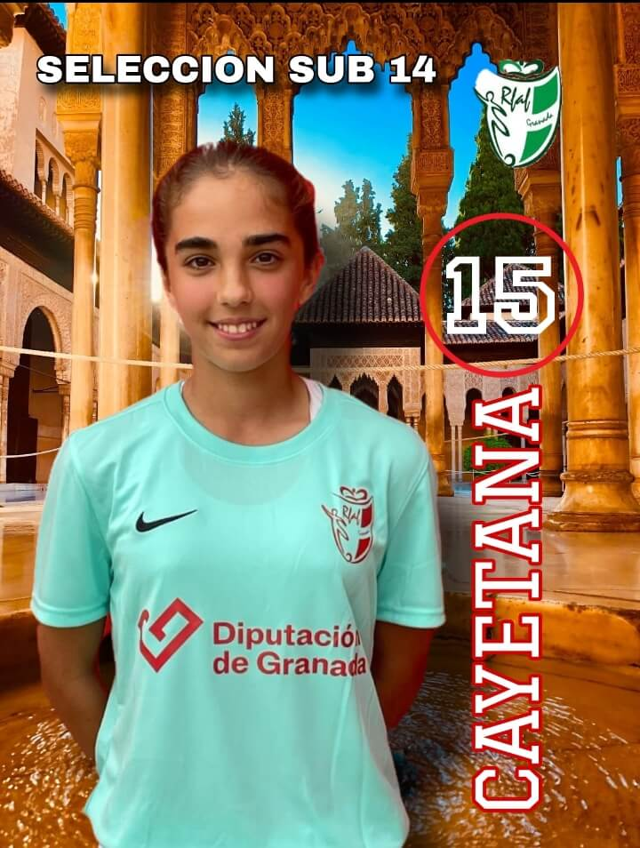

El Sueño de una
Futbolista
Sigue el camino de Cayetana desde sus primeros pasos
hasta sus mayores logros en el fútbol femenino

Pasión, Talento
y Determinación
Empecé a jugar al fútbol con solo 7 años en el Ogíjares 89 C.F., siendo la única niña en un equipo de niños. Desde entonces, el balón ha sido parte inseparable de mi vida.
Hoy defiendo los colores del Granada C.F. S.A.D. en el Cadete Femenino de 1ª Andaluza, y he tenido el honor de representar a la Selección Granadina en varias ocasiones.
Conoce mi historiaÚltimas Entradas
Los momentos más especiales de mi trayectoria deportiva

Segunda Temporada en el Cadete del Granada
Otro año más defendiendo los colores del Granada C.F. S.A.D. en 1ª Andaluza Cadete Femenino. Todos los partidos como titular.

Capitana de la Selección Granadina
Convocada con la Selección Granadina Sub-14, fui una de las capitanas y marqué un gol ante Jaén. Un momento inolvidable.

Primera Temporada en el Granada C.F.
Fichaje por el Granada C.F. S.A.D. Infantil Femenino. Capitana del equipo, 4 goles y subcampeonas de liga.
Último Vídeo Destacado
Pared, recorte y gol — la magia de Cayetana en acción